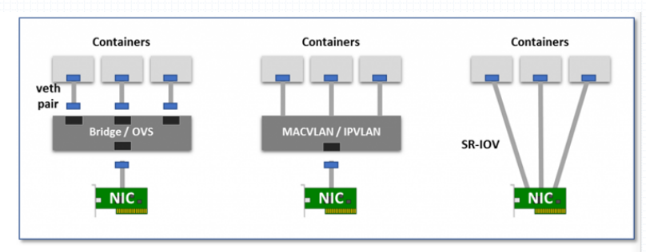
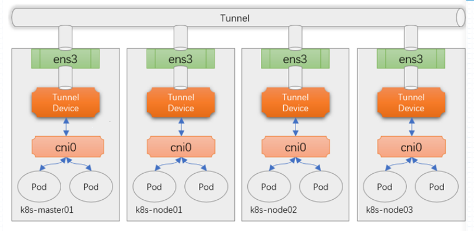

k8s网络
k8s主要存在四种类型的网络通信：
C-to-C：发生在Pod内部，借助于lo实现；Pod-to-Pod：Pod间的通信，k8s自身并未解决该该类通信，而是借助于CNI接口，交给第三方解决方案；CNI之前的接口叫kubenet；Service-to-Pod：借助于kube-proxy生成的iptables或ipvs规则完成；ExternalClients-to-Service：引入集群外部流量，hostPort、hostNetwork、nodeport/service、loadbalancer/service、externalIP/service、Ingress；
k8s通过CNI接口将Pod-to-Pod间的通信交由第三方网络的原因在于，跨节点的容器间通信不能存粹的物理桥接，这样会造成一个网段内挤入太多的物理节点。这样会产生网络风暴，所以必须将其进行隔离。
隔离的方法就是把每一个节点及其背后的Pod作为一个小的网络来使用。而此时跨节点的Pod通信就变为了如何去突破Pod所在的节点的边界。也就是如何去实现跨节点的Pod间的路由。
Pod跨界点通信解决方法
要构建出一个跨节点通信的POD网络需要解决以下两个问题：
构建出虚拟网络，方法有两种：
- Overlay Network：叠加网络，覆盖网络
- Underlay Network：承载网络
将容器接入构建出的虚拟网络，而容器或pod接入网络方法有以下三种：
- 使用虚拟网桥：在宿主机上使用虚拟网桥如Docker0、CNI0。每一个pod都创建一个虚拟网卡，一半在桥上，一般在Pod自身内部来完成，而后借助宿主机网卡到达网络外部。
- 多路复用：所谓多路复用是指将一块物理网卡在内核中模拟出MACVLAN或IPVLAN将其作为交换机来使用。这里的VLAN是指单个主机或多个主机上的多个pod组织在一个VLAN中。此时就不需要网桥，只需要一个内核级的VLAN功能即能实现。
- 硬件交换：这种称之为单根网络，一块物理网卡能被多个内核或多个容器共同使用，硬件自身支持虚拟功能。这要求硬件的支持。

Overlay Network

上图为叠加网路功能的示意，将pod接入网络的方式就是虚拟网桥cni0，而每一个虚拟网桥上的pod都虚拟出一对网卡，一半在pod内部一半在cni0上。
而网络构建方式是在每一个节点上再创建一个专用隧道接口（tunnel device），节点内部的pod通信无需通过隧道直接可以通信，而跨界点的pod通信需要将报文通过cni0后发送给隧道入口设备，由隧道入口设备在其报文上加上隧道报文封装后通过物理网卡发送给对端的隧道设备，对端的隧道设备卸载隧道封装后交给cni0，cni0再交后端Pod。
可以理解为在每一个节点上分别加了一个专用的隧道设备后，从而能够构建出一个跨界点
的隧道网路，这就是所谓的叠加网路。
Tunnel协议
目前最常用的Tunnel协议有以下两种：
- VxLAN：把每一个宿主机背后的网络当成局域网。其可以借助于VxLAN网络标识和交换功能，将一个LAN的功能交换到另外一个LAN中，但是VLAN所支持的虚拟网络是有限的（4095个），在一个超过4095节点的网络中VLAN就无法使用了，所以就出现了VxLAN协议，其支持65535个网络。
- IPIP：在IP报文中封装了IP报文。其开销比VxLAN小，但是其安全性弱于VxLAN。
- GRE：通用路由封装。
本博客所有文章除特别声明外，均采用 CC BY-NC-SA 4.0 许可协议。转载请注明来自 MyLinuxOPS！